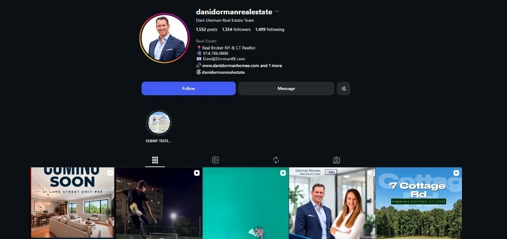
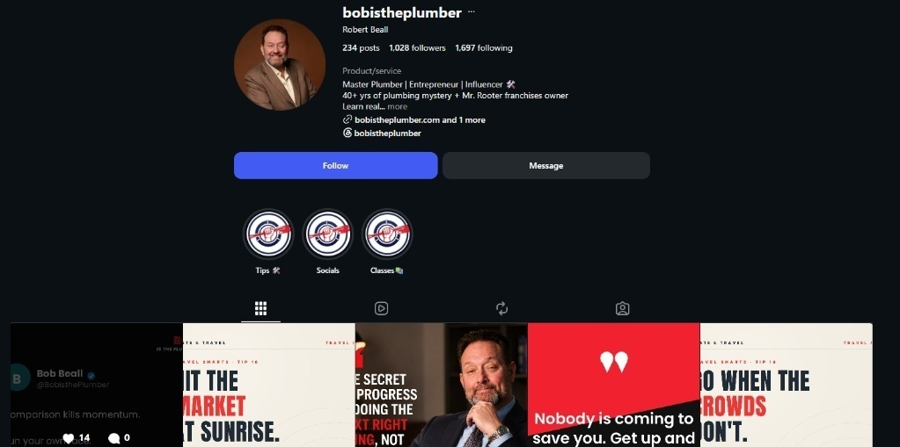

Inside Sales Agent (ISA) — Lake Michigan Realty Management
Client: Javier Rodriguez
Real estate inbound & outbound calls, lead qualifying, weekly ISA mastermind, weekly team reporting.
Versatile Virtual Assistant adept in web dev, AI automation & development, cold calling, marketing, telecommunications, and entrepreneurship.
Demonstrated proficiency in delivering high-quality services across diverse projects, leveraging strong communication, technical, and strategic abilities. I bridge conversational real estate qualifying with clean backend Python/Streamlit/Retell infrastructure.
Verified Record: Certified true and correct representation of multi-campaign telecommunications, outbound ISA lead management, and automated client onboarding infrastructure.
Paul B. Polintan LPT, MAEd
School Principal
Client: Javier Rodriguez
Real estate inbound & outbound calls, lead qualifying, weekly ISA mastermind, weekly team reporting.
Client: Bob Beal
Website development, AI automation, Retell AI developer, recruitment, client onboarding.
Client: Dani Dorman
Real estate outbound calls, qualifying leads, lead management, team reporting.
Real estate inbound & outbound calls, call tracking voicemails, lead management, weekly team reporting.
Real estate inbound & outbound calls, callbacks, call tracking voicemails, lead management, weekly team reporting.
Real estate inbound & outbound calls, callbacks, call tracking voicemails, lead management, weekly team reporting.
Translated property acquisition authority into targeted Instagram visual touchpoints, market highlight cards, and buyer-intent caption sequencing synchronized with outbound phone cadence.

Constructed service-authority trust blocks, fix-breakdown carousel architecture, and DM inquiry capture hooks designed for immediate regional trade response conversion.

Follow-up Boss, Go High Level, Podio, Ylopo, Flex MLS, Propelio, Mojo Dialer, Zillow
Call Tools, Grasshopper, Google Voice
Retell AI Developer, Claude, Zapier, Streamlit
VSCode, GitHub, Railway, Oracle
Google Workspace, Slack, WhatsApp, Skype, Zoom, Google Meet
Microsoft Office, Hubstaff, Canva
Inviting partnerships for collective growth. Direct outreach for high-intent ISA execution or Retell AI/web deployment.